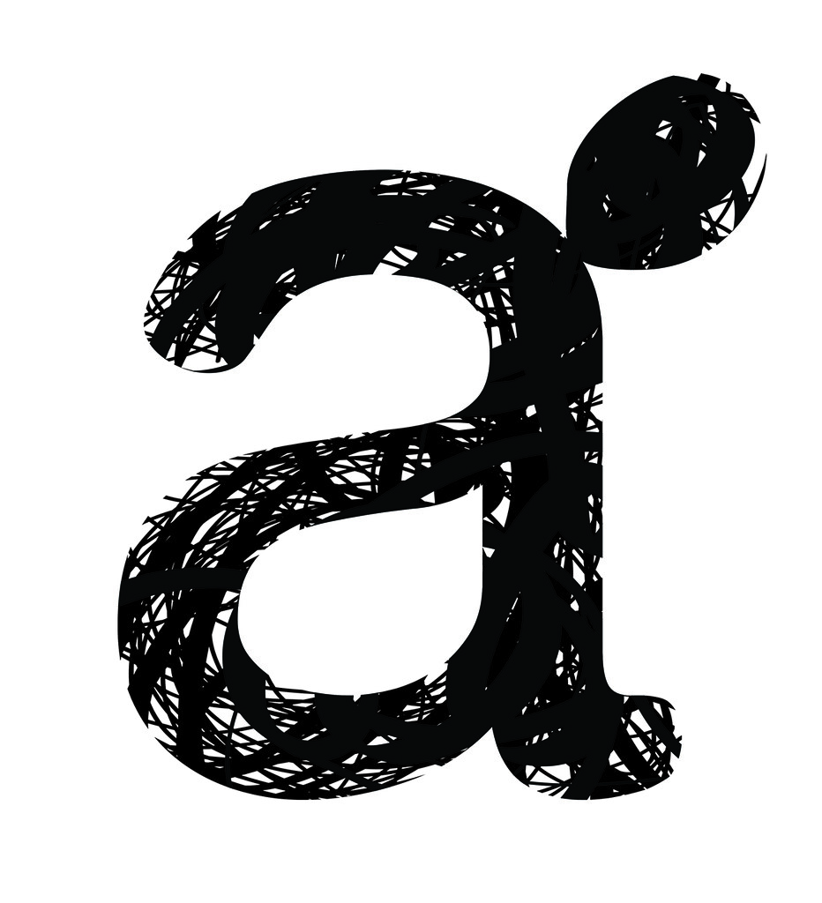

Ce site est conçu pour tous ceux et celles qui se demande si c'est facile de programmer.Pour tous ceux qui sont déjà intéressés par la pro mais qui se demandent vers où se diriger, ou bien quelles sont les ressources disponibles, sites web, logiciels, formations.Ou encore pour ceux qui veulent absolue mer programmer une de leurs idées géniales, mais ni connaissent rien à la programmation!!
Étant un mordu de tous ce qui est casse-tête, énigmes, jeux d'échec et autre le sujet du site m'est venue naturellement.
Donc si comme moi vous êtes un ou une mordu des mauts de têtes, la programmation est faite pour vous. Pour les autres ne vous découragé pas,
car tous est possible à qui veulent bien... De plus certains types de codes sont des plus simples a imaginers et concevoirs.
Bonne chance à vous tous!!